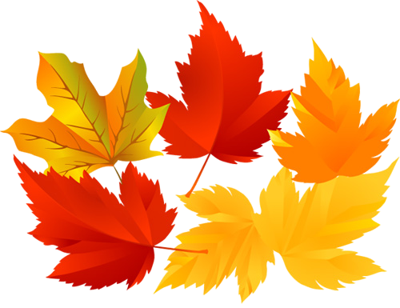
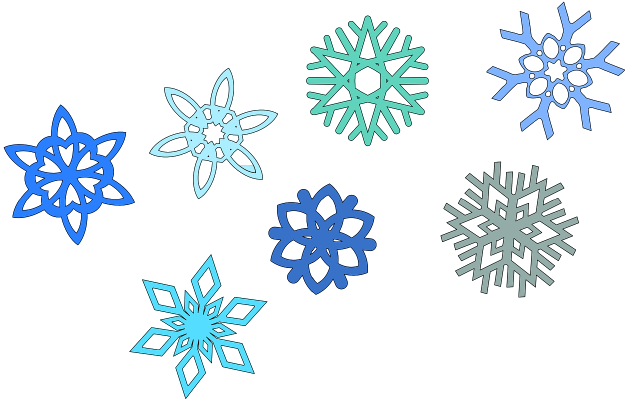

Metų laikai, tradiciškai skiriami keturi: pavasaris, vasara, ruduo ir žiema. Metų laikų kaitą sukelia Žemės skriejimas aplink Saulę ir pastovus Žemės sukimosi ašies polinkis į Žemės orbitos plokštumą. Žemės Šiaurės pusrutulis į Saulę atgręžtas pavasarį ir vasarą, mažiau − rudenį ir žiemą; dėl to Saulės spinduliai krinta į Šiaurės pusrutulį stačiau, ir Saulė apšviečia bei kaitina jį stipriau pavasarį ir vasarą, negu rudenį ir žiemą. Žemės Pietų pusrutulį Saulė apšviečia ir kaitina stipriau tuo metu, kai Šiaurės pusrutulyje yra ruduo ir žiema; dėl to, pvz., kai Šiaurės pusrutulyje yra žiema, Pietų pusrutulyje − vasara.
Ruduo – vienas iš keturių metų laikų vidutinio klimato zonose. Yra tarp vasaros ir žiemos. Meteorologiniu požiūriu, Šiaurės pusrutulyje rudeniu laikomi rugsėjo, spalio ir lapkričio mėnesiai. Astronomiškai ruduo prasideda apie rugsėjo 23 d. ir baigiasi gruodžio 21 d. Airių kalendorius, kuriame dar vis naudojamas keltiškasis ciklas, ruduo apima rugpjūtį, rugsėjį ir spalį. Tuo tarpu kinų astronomijoje ruduo prasideda apie rugpjūčio 7 d. Nemažai senovės civilizacijų metus skaičiavo nuo rudens. 2006 m. ruduo buvo šilčiausias per 500 metų, tai siejama su visuotiniu atšilimu.
Žiema – vienas iš keturių metų laikų vidutinio klimato zonose. Ji pasižymi žemesne oro temperatūra ir trumpesnėmis dienomis, nei kitais metų laikais. Toliau nuo pusiaujo žiemą dažnai iškrenta sniegas. Žiemos pradžia ir pabaiga dėl kultūrų skirtumų laikomos skirtingu metu. Šiuolaikiniu meteorologiniu požiūriu, Šiaurės pusrutulyje žiema laikomi gruodžio, sausio ir vasario mėnesiai, o Pietų pusrutulyje – birželis, liepa ir gegužė. Bet kai kuriose Europos ir Azijos rytų kultūrose, žiemos pradžia laikomas lapkričio mėnuo.
Pavasaris – vienas iš keturių metų laikų vidutinio klimato zonose. Pavasarį pražysta dauguma augalų, sugrįžta migruojantys paukščiai. Pavasario pavadinimas siejamas su paskesnio metų laiko „vasaros“ pavadinimu, prie kurio pridedamas priešdėlis pa-, reiškiantis buvimą šalia. Astronomiškai pavasaris prasideda pavasario lygiadieniu (apie kovo 20 d. Šiaurės pusrutulyje ir rugsėjo 23 d. Pietų pusrutulyje). Meteorologiniu požiūriu, Šiaurės pusrutulyje pavasariu laikomi kovo, balandžio ir gegužės mėnesiai, o Pietų pusrutulyje – rugsėjis, spalis ir lapkritis. Bet airiškame kalendoriuje pavasariu laikomi vasaris, kovas ir balandis.
Vasara – vienas iš keturių metų laikų vidutinio klimato zonose. Pasižymi šiltu oru. Šiaurės pusrutulyje kalendorine vasara laikomi birželio, liepos ir rugpjūčio mėnesiai. Astronominė vasara prasideda apie birželio 21 dieną (vasaros saulėgrįžos dieną), baigiasi apie rugsėjo 23 d. (rudens lygiadienio dieną). Pietų pusrutulyje vasara - gruodžio, sausio ir vasario mėnesiais, astronominė – nuo gruodžio 21 (arba 22) d. (ten tai yra vasaros saulėgrįžos diena) iki kovo 20 (arba 21) d. (ten tai yra rudens lygiadienio diena).

2021 © Netikra Wikipedija